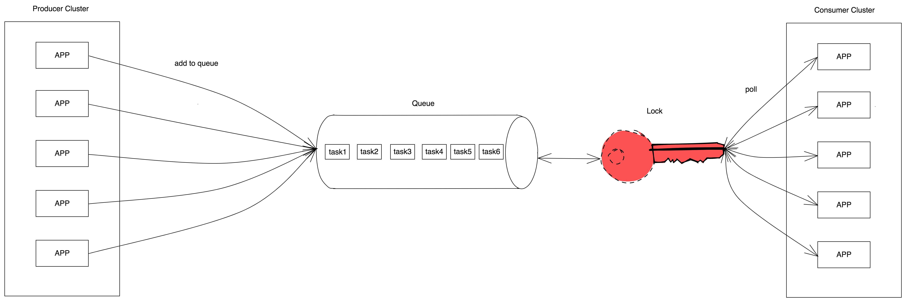
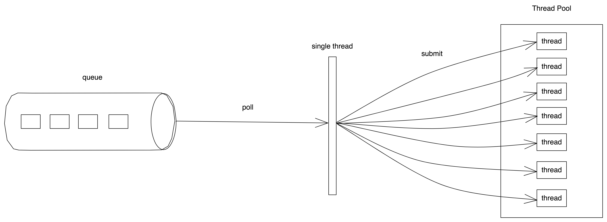

生产-消费模型组件实现 Producer Consumer Solution using BlockingQueue该篇文章介绍了使用阻塞队列实现了生产-消费模型，细心的朋友可以发现，是在单应用内通过阻塞队列实现的，而实际的分布式系统中，如何实现生产-消费模型呢？由于该模型通过队列实现，该组件况且称作为队列机。
模型
- 生产-消费模型
 - 线程池模型

对比单机环境下的模型来看，分布式环境的队列机更为复杂，阻塞队列当然不能再使用java提供的工具类，这里使用redis作为队列，使用redis哪种数据类型作为存储方式呢，这里选择zset，不仅仅是为了实现生产消费，结合zset数据结构，而且还可以实现延迟队列。下面介绍延迟队列机的组件实现方式。
代码实现
队列接口
public interface BatchDelayQueue<V> {
/**
* 初始化延迟队列
*
* @param topic 主题
*/
void init(String topic);
/**
* 初始化延迟队列
*
* @param topic 主题
*/
void init(String topic, Integer batchSize);
/**
* 初始化延迟队列
*
* @param topic 主题
* @param redisTemplate
*/
void init(String topic, Integer batchSize, RedisTemplate redisTemplate);
/**
* 新增元素到队列中
*
* @param e 加入的元素
* @param delay 延时时间，单位为毫秒
* @return 添加结果
*/
boolean add(V e, long delay);
/**
* 批量获取符合元素
*
* @param time 超时时间，单位为毫秒
* @return 返回并删除符合时间要求的元素
* @throws Exception 异常情况
*/
List<QueueTask<V>> poll(long time) throws Exception;
/**
* 删除元素
*/
Long remove(V e);
}
队列实现类
@Slf4j
public class ExtBatchDelayQueue implements BatchDelayQueue<String> {
private String topic;
private Lock redisLock;
private RedisTemplate<String, String> redisTemplate;
private Integer batchSize;
public static final Integer DEFAULT_BATCH_SIZE = 50;
public static final Integer DEFAULT_MAX_BATCH_SIZE = 100;
@Override
public void init(String topic) {
this.init(topic, DEFAULT_BATCH_SIZE);
}
// 可以指定批量获取数目
@Override
public void init(String topic, Integer batchSize, RedisTemplate redisTemplate) {
this.topic = topic;
this.redisTemplate = redisTemplate;
this.batchSize = batchSize == null ? DEFAULT_BATCH_SIZE
: (batchSize > DEFAULT_MAX_BATCH_SIZE ? DEFAULT_MAX_BATCH_SIZE : batchSize);
RedisLockRegistry redisLockRegistry = new RedisLockRegistry(redisTemplate.getConnectionFactory(), "lock");
this.redisLock = redisLockRegistry.obtain(topic);
}
@Override
public List<QueueTask<String>> poll(long timeout) throws Exception {
boolean lock = false;
try {
// 加分布式锁，保证同一时间只有一台机器poll任务
lock = redisLock.tryLock(timeout, TimeUnit.MILLISECONDS);
if (lock) {
// 获取任务
Set<TypedTuple<String>> sets = redisTemplate.opsForZSet()
.rangeByScoreWithScores(topic, 0, System.currentTimeMillis(), 0, batchSize);
if (CollectionUtils.isEmpty(sets)) {
return null;
}
List<QueueTask<String>> tasks = sets.stream()
.map(p -> QueueTask.<String>builder().score(p.getScore()).value(p.getValue()).build())
.collect(Collectors.toList());
try {
// 删除
redisTemplate.opsForZSet()
.remove(topic, sets.stream().map(TypedTuple::getValue).toArray());
} catch (Exception e) {
log.error("ExtRedisBatchDelayQueue poll remove error.", e);
}
return tasks;
}
} catch (InterruptedException e) {
log.error("ExtRedisBatchDelayQueue poll error.", e);
throw e;
} finally {
if (lock) {
redisLock.unlock();
}
}
return null;
}
@Override
public boolean add(String e, long delay) {
return redisTemplate.opsForZSet().add(topic, e, System.currentTimeMillis() + delay);
}
}
Consumer
public class DelayQueueBatchBootstrap {
/**
* 队列
*/
private BatchDelayQueue delayQueue;
/**
* 批量拉取任务数,不大于100
*/
private int batchSize;
/**
* 队列唯一名称
*/
private String delayQueueKey;
/**
* redis
*/
private RedisTemplate<String, String> redisTemplate;
/**
* 队列监控（消费速度、队列大小、延迟时间）
*/
private DelayQueueMonitor delayQueueMonitor;
/**
* volatile关键字防止构造函数溢出
*/
private volatile ExecutorService HANDLE_DELAY_TASK_EXECUTOR;
private final AtomicBoolean RUNNING = new AtomicBoolean(true);
private final ExecutorService DELAY_QUEUE_POLL_EXECUTOR = new ThreadPoolExecutor(1, 1,
60, TimeUnit.SECONDS, new ArrayBlockingQueue<>(1),
new ThreadFactoryBuilder().setNameFormat("delayQueuePollThread-%d").build());
private DelayQueueBatchBootstrap() {
}
public DelayQueueBatchBootstrap(String delayQueueKey, BatchDelayQueue delayQueue,
RedisTemplate<String, String> redisTemplate, boolean queueMonitor) {
this(delayQueueKey, delayQueue, redisTemplate, new DefaultDelayQueueMonitor(queueMonitor, queueMonitor),
DEFAULT_BATCH_SIZE);
}
public DelayQueueBatchBootstrap(String delayQueueKey, BatchDelayQueue delayQueue,
RedisTemplate<String, String> redisTemplate, boolean queueMonitor, long delayThreshold) {
this(delayQueueKey, delayQueue, redisTemplate,
new DefaultDelayQueueMonitor(queueMonitor, queueMonitor, delayThreshold),
DEFAULT_BATCH_SIZE);
}
public DelayQueueBatchBootstrap(String delayQueueKey, BatchDelayQueue delayQueue,
RedisTemplate<String, String> redisTemplate, DelayQueueMonitor delayQueueMonitor) {
this(delayQueueKey, delayQueue, redisTemplate, delayQueueMonitor, DEFAULT_BATCH_SIZE);
}
public DelayQueueBatchBootstrap(String delayQueueKey, BatchDelayQueue delayQueue,
RedisTemplate<String, String> redisTemplate, DelayQueueMonitor delayQueueMonitor, Integer batchSize) {
this(delayQueueKey, delayQueue, redisTemplate, delayQueueMonitor, batchSize, null);
}
public DelayQueueBatchBootstrap(String delayQueueKey,
BatchDelayQueue delayQueue, RedisTemplate<String, String> redisTemplate,
DelayQueueMonitor delayQueueMonitor, Integer batchSize,
ExecutorService handleDelayTaskExecutorDefault) {
this.delayQueueKey = delayQueueKey;
this.redisTemplate = redisTemplate;
this.batchSize = batchSize;
this.delayQueue = delayQueue;
this.HANDLE_DELAY_TASK_EXECUTOR = handleDelayTaskExecutorDefault;
this.delayQueueMonitor =
delayQueueMonitor == null ? new DefaultDelayQueueMonitor(false, false) : delayQueueMonitor;
}
/**
* spring容器加载所有的bean之后触发事件时开始poll
*
* @see DelayQueueHandlerLoader 保证所有的Handler加载完成，避免任务丢失
*/
@EventListener(value = ContextRefreshedEvent.class)
public void init() {
delayQueue.init(delayQueueKey, batchSize, redisTemplate);
delayQueueMonitor.schedule(delayQueueKey, redisTemplate);
addShutDownHook();
DELAY_QUEUE_POLL_EXECUTOR.execute(() -> {
while (RUNNING.get()) {
List<QueueTask<String>> elementFromDelayQueue = null;
try {
elementFromDelayQueue = delayQueue.poll(1000);
if (CollectionUtils.isEmpty(elementFromDelayQueue)) {
Thread.sleep(100);
continue;
}
elementFromDelayQueue.iterator().forEachRemaining(p -> {
try {
// 线程池执行
executorService
.submit(() -> {
...
处理具体业务逻辑
...
});
// 监控
// delayQueueMonitor
} catch (Exception e) {
log.error("delayQueueHandle exec task fail.[{}]", p, e);
}
});
} catch (RejectedExecutionException rejectedExecutionException) {
log.error("delayQueueHandle failed, reject execution! element.[{}]",
elementFromDelayQueue, rejectedExecutionException);
} catch (Exception e) {
if (RUNNING.get()) {
log.error("delayQueueHandle failed, element.[{}]", elementFromDelayQueue, e);
} else {
log.warn("delayQueueQueue not running.");
}
}
}
});
}
private void addShutDownHook() {
Runtime.getRuntime().addShutdownHook(
new Thread(() -> {
// 优雅关停
...
...
}));
}
public boolean putElement(Object bizElement, long delay) {
try {
delayQueue.add(bizElement, delay > 0 ? delay : 8000);
log.info("put element into delay queue，element.[{}], delayMillis.[{}]",
elementJson, delay);
return true;
} catch (Exception e) {
log.error("put element into delay queue failed, element.[{}], delayMillis.[{}]",
elementJson, delay, e);
return false;
}
}
}
Producer
@Configuration
public class DelayQueueConfig {
@Bean(name = "delayQueue")
public DelayQueueBatchBootstrap delayQueue() {
return new DelayQueueBatchBootstrap("xxxxx", new ExtBatchDelayQueue(),
redisTemplate, delayQueueMonitor(), "批量拉取大小", "指定线程池)";
}
private DelayQueueMonitor delayQueueMonitor() {
return new DelayQueueMonitor() {
@Override
public boolean logSwitch() {
return true;
}
@Override
public boolean taskCostSwitch() {
return true;
}
};
}
}
说明
- 由于篇幅的原因，很多代码没有贴出来，有很多其他功能，上面有添加、拉取任务的方法，还有比如批量添加、批量删除、阻塞拉取任务、判断延迟任务队列大小、判断任务是否存在、以及获取任务延迟时间等等。
- 支持批量拉取，以及延迟队列监控，线程池消费，优雅关停等等。
总结
上面只是通过延迟队列去实现队列机，其实可以根据该思路，实现分布式环境下的生产-消费模型组件。
- 使用时，注意任务较多时，应该队列隔离开来，不同业务使用单独的队列，否则会导致任务积压，任务延迟处理，影响实际业务。
- 消费时，使用线程池消费，可以提高消费速率，不过也要通过具体的业务量，计算线程池大小，否则会造成线程池资源耗尽。
实际业务场景中，大量使用该模型解决业务需求。